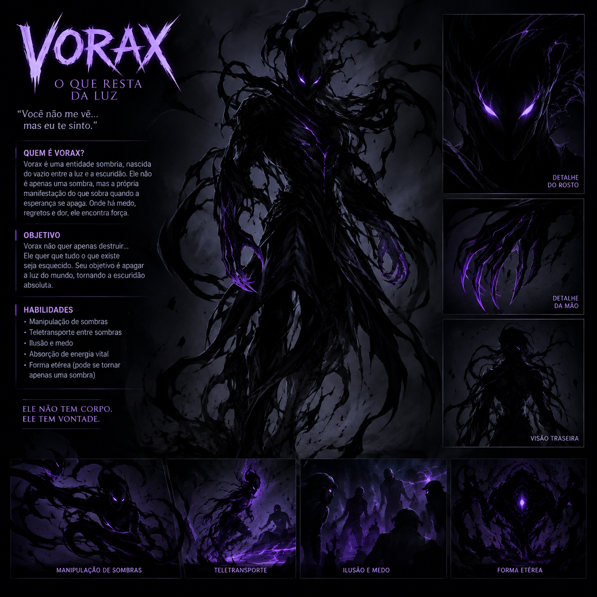
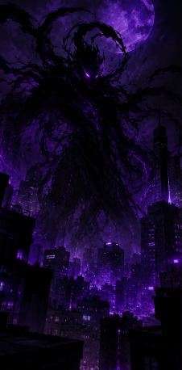
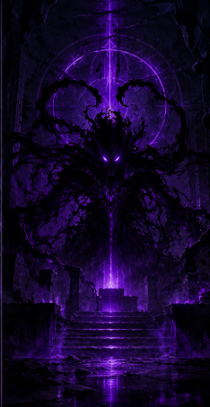
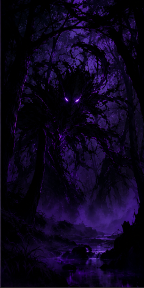

Vorax é uma entidade sombria de origem desconhecida, formada por uma massa viva de sombras negras que assume a aparência de um ser humanoide gigantesco. Seu corpo parece estar constantemente se desfazendo e se reconstruindo, como se fosse feito de fumaça e escuridão.


Cidade sob a Lua Roxa 🌑

Templo em Ruínas 🏛️

Floresta Sombria 🌲